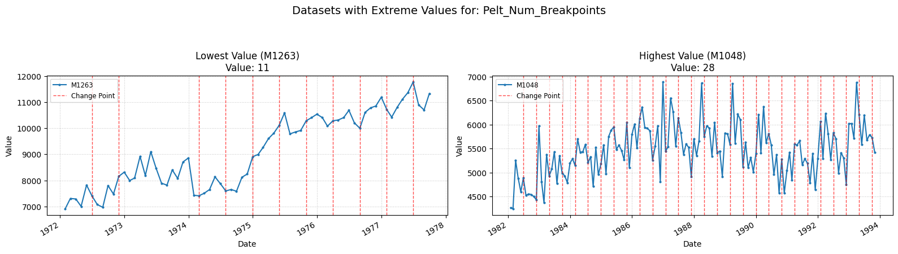
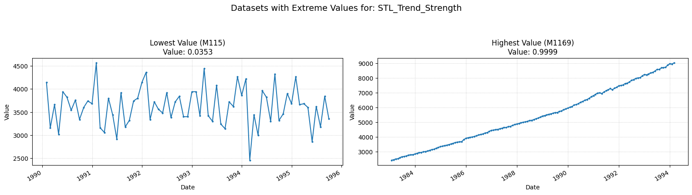
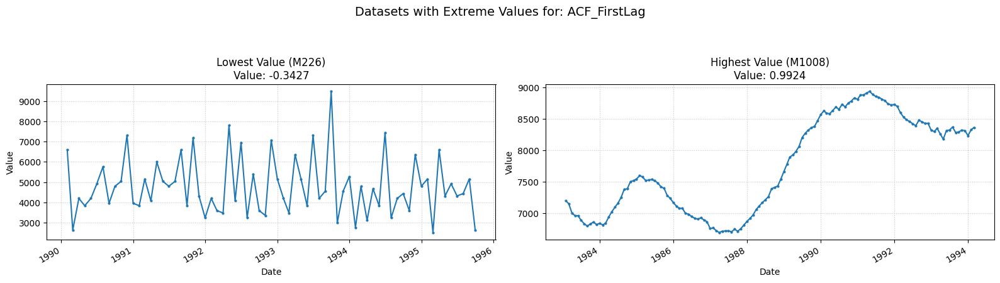
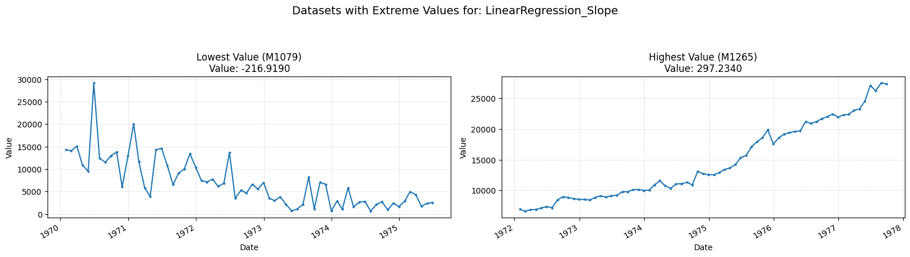
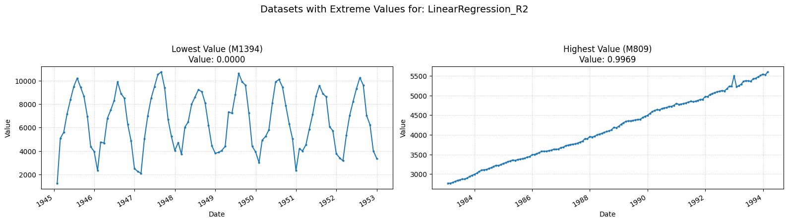
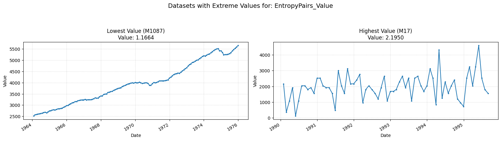
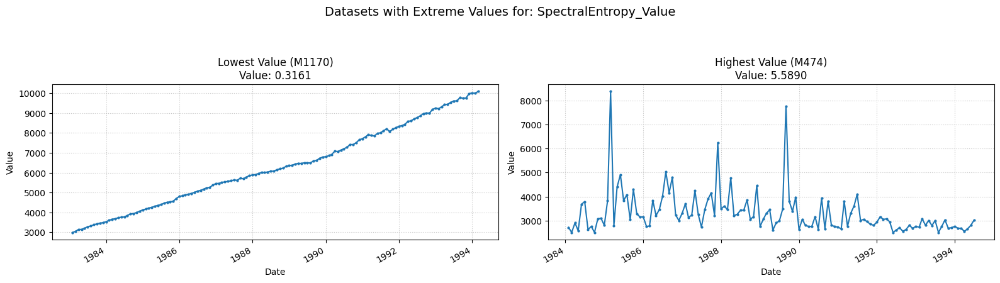
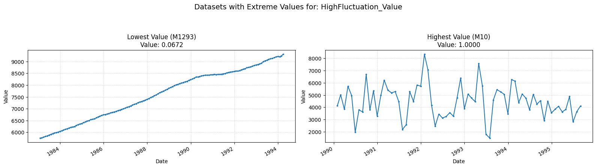

Documentation
Pelt_Num_Breakpoints
This feature detects the number of points where the trend changes.
Low value: The trend has few/none shifting points, and is constant through time.
High value: The trend is constantly shifting, provoking many structural changes.

| Parameter | Type | Description | Default |
|---|---|---|---|
| model | str | Cost function model (e.g., "l1", "l2", "rbf") | "l2" |
| custom_cost | BaseCost or None | Custom cost function object. Overrides `model`. | None |
| min_size | int | Minimum allowable segment length. | 2 |
| jump | int | Subsampling step size for checking breakpoints. | 5 |
| params | dict or None | Additional parameters dictionary for the cost `model`. | None |
STL_Trend_Strength
This feature computes the strength of a trend within the time-series.
Low value: A value close to zero means there are few/none indicators of a trend in the time series.
High value: A value close to one means there are strong signs of the series containing a trend.

| Parameter | Type | Description | Default |
|---|---|---|---|
| freq | int | Frequency (period) of the time series (e.g., 12 for monthly). | 1 |
| seasonal | int | Length of the seasonal smoother (must be odd). | 7 |
| robust | bool | Flag for robust fitting. | False |
ACF_FirstLag
This feature measures the first autocorrelation coefficient (lag 1).
Low value: A negative value indicates negative autocorrelation (tendency to oscillate).
High value: A positive value indicates positive autocorrelation (tendency to persist).

| Parameter | Type | Description | Default |
|---|---|---|---|
| nlags | int | Number of lags for ACF calculation. | 10 |
CrossingPoints
This feature counts the number of times a time-series crosses the median line.
Low value: Means there are few/none oscillations across the time-series.
High value: Means there are frequent oscillations across the time-series.

No Parameters
LinearRegression_Slope
This feature measures the overall linear trend slope.
Low value: A negative value means there is a downward trend.
High value: A positive value means an upward trend.

No Parameters
LinearRegression_R2
This feature measures how well a linear trend fits the time-series (Coefficient of Determination, $R^2$).
Low value: A value close to zero means a linear model explains little variance.
High value: A value close to one means a linear model explains much of the variance.

No Parameters
EntropyPairs_Value
This feature measures entropy based on the 3 quantile bins of the time-series.
Low value: Means simpler patterns in the time-series sequence.
High value: Means more complex patterns in the time-series sequence.

No Parameters
SpectralEntropy_Value
This feature measures the forceastibility of a time-series.
Low value: Means there are strong signs of a trend across the time-series.
High value: Means the time-series is probably white-noise.

| Parameter | Type | Description | Default |
|---|---|---|---|
| sf | float | Sampling frequency of the time series. | (Mandatory) |
| method | str | PSD calculation method ("welch" or "fft"). | "welch" |
| nperseg | int or None | Segment length for Welch method. If None, defaults based on data length. | None |
| normalize | bool | Normalize entropy output to [0, 1]. | False |
HighFluctuation_Value
Measures the proportion of large changes in the time-series.
Low value: Means few/none large fluctuations.
High value: Means many large fluctuations.

No Parameters